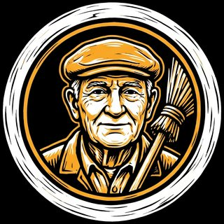

Раскладка открытых задач из Notion по дням и неделям: граф «Синапсов», календарь и часы внимания. Пишет её задача «Дворник» по понедельникам; переносы владелец подтверждает в треде прогона.

Стена пока не сложенаКладка появится, когда задача «Дворник» запишет документ plan/current в хранилище этой страницы. Каждый понедельник окно сдвигается на неделю.